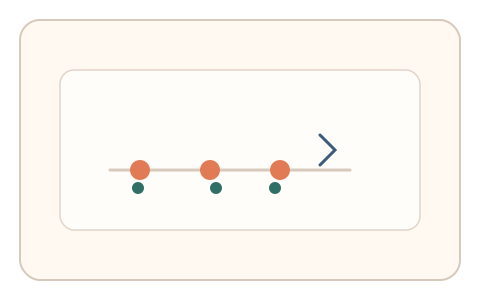
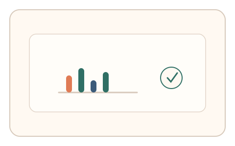

#85
Morphological Analysis - Combination Batches
已扩展
瞬时节律抖动
在极短节拍序列中让用户同步点击，以节律抖动与反应时序列识别真实性。
概念原文
极短时间内出现 3–4 次节拍提示，用户同步点击，系统评估节律序列中的自然抖动并做异常检测。任务结构为短序列，信号形态为反应时与节律序列。
反向利用“适度不精确”作为人类特征。
研究背景
人类在节拍同步任务中会出现可预测的微抖动与相位偏移，短序列仍能体现稳定的生理节律特征。利用“适度不精确”可提高对脚本的区分度。
核心机制
- 呈现 3–4 次短促节拍提示。
- 用户同步点击或按键响应。
- 记录反应时序列与节律抖动。
- 与群体基线进行比较。
用户流程
- 步骤 1：用户看到短促节拍提示。
- 步骤 2：用户同步点击完成序列。
- 步骤 3：系统分析抖动与相位并判定。
判定信号
反应时抖动与相位偏移
人类同步点击存在稳定的微抖动。
节拍一致性
真实用户的节奏一致性不会过度完美。
判定逻辑
抖动与相位偏移需落在人类分布区间；过度精准或随机判异常。
对抗面
- 脚本按固定间隔触发点击
- 重放真实用户的节奏序列
防御与缓解
- 随机化节拍间隔与音视觉提示
- 加入轻微节奏扰动降低模板化
- 叠加指针轨迹与停顿信号进行多信号判定
可达性与风险
提供更慢节奏与视觉替代提示，避免对听觉障碍用户造成影响。
- 节奏过快导致误差增大
- 不同设备延迟影响节拍同步
可视化状态

状态 1：短促节拍
节拍提示快速出现。

状态 2：同步点击
用户同步点击完成节拍序列。

状态 3：抖动判定
根据抖动与相位判定。
参考资料
Sensorimotor synchronization
说明节拍同步中的反应时与抖动特征。
Rhythm
说明节律感知与时序一致性。